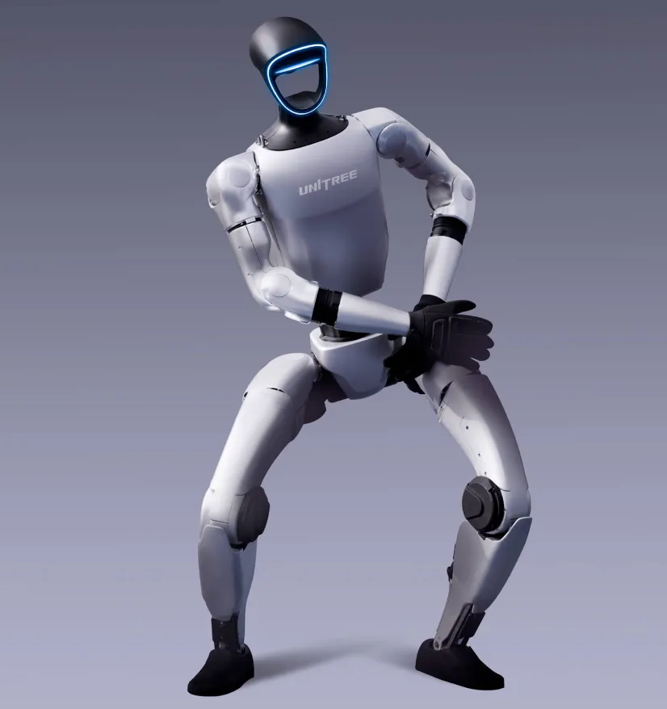

Inside the Money
How ¥100bn+ flowed into China's humanoid startups.
China is not just betting on humanoid robots with private capital — entire provincial governments and national funds are backing the industry. Here is how the policy machine works.

If you follow humanoid robots, you have seen the funding headlines — hundreds of billions of yuan, national industrial funds, and provincial "humanoid robot industrial parks." This is the breakdown of China's humanoid robot policy machinery: who is funding what, and why the state treats humanoids as a strategic industry.
| National level | Big-fund programs and state-linked vehicles | Backs strategic AI & robotics firms, chip localization |
|---|---|---|
| Municipal (Beijing, Shanghai, Shenzhen) | City-level humanoid funds & industrial parks | Shanghai and Beijing have flagship humanoid innovation centers |
| Provincial (Zhejiang, Anhui, Guangdong…) | Provincial funds + land + subsidies | Pulls startups to build factories and pilot lines |
| SOE & strategic investors | State-linked capital into private startups | Alibaba, Tencent, Xiaomi and local SOE funds all participate |
The most visible policy tool is the humanoid robot industrial park. Cities from Beijing to Shanghai to Shenzhen to Hangzhou have carved out zones with subsidized R&D labs, shared test facilities, supply-chain clusters and guaranteed procurement pilots. The effect is a dense ecosystem where a humanoid startup can source reducers, screws, motors and talent within a few kilometers — which is exactly why China's humanoid supply chain is advancing so fast.
The takeaway: China's humanoid bet is not a single fund — it is a layered system of national, city and provincial money wrapped around industrial parks and supply-chain mandates. That is why Chinese humanoid companies can iterate faster and cheaper than anywhere else: the whole state apparatus is pushing in the same direction.
How ¥100bn+ flowed into China's humanoid startups.
Hangzhou's best-selling humanoid maker.
Shanghai's Huawei-genius-founded humanoid company.
China's first listed humanoid company (09880.HK).
Humanoid and component company profiles in the database.